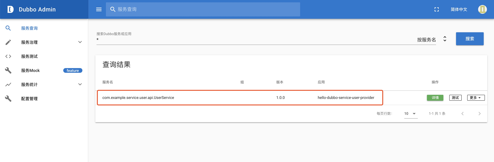

概述
案例相关配置可参考 GitHub：https://github.com/apache/dubbo-spring-boot-project/tree/master/dubbo-spring-boot-samples
创建服务接口项目 创建一个名为 hello-dubbo-service-user-api 的项目，该项目只负责定义接口
POM 1 2 3 4 5 6 7 8 9 10 11 12 13 14 15 16 17 18 <?xml version="1.0" encoding="UTF-8"?> <project xmlns ="http://maven.apache.org/POM/4.0.0" xmlns:xsi ="http://www.w3.org/2001/XMLSchema-instance" xsi:schemaLocation ="http://maven.apache.org/POM/4.0.0 http://maven.apache.org/xsd/maven-4.0.0.xsd" > <modelVersion > 4.0.0</modelVersion > <groupId > com.example</groupId > <artifactId > hello-dubbo-service-user-api</artifactId > <version > 1.0.0-SNAPSHOT</version > <packaging > jar</packaging > <properties > <project.build.sourceEncoding > UTF-8</project.build.sourceEncoding > <project.reporting.outputEncoding > UTF-8</project.reporting.outputEncoding > <java.version > 1.8</java.version > </properties > </project >
定义服务接口 1 2 3 4 5 6 7 8 9 10 11 12 13 14 15 16 package com.example.service.user.api;public interface UserService String sayHi () ; }
定义完成后，需在 Terminal 控制台执行：mvn install，将项目打包进 maven 本地仓库，以供 服务提供者项目 和 服消费者项目 依赖。
创建服务提供者项目 创建一个名为 hello-dubbo-service-user-provider 的项目，该项目主要用于实现接口
POM 1 2 3 4 5 6 7 8 9 10 11 12 13 14 15 16 17 18 19 20 21 22 23 24 25 26 27 28 29 30 31 32 33 34 35 36 37 38 39 40 41 42 43 44 45 46 47 48 49 50 51 52 53 54 55 56 57 58 59 60 61 62 63 64 65 66 67 68 69 70 71 72 73 74 75 76 77 78 79 80 81 82 83 84 85 86 87 88 <?xml version="1.0" encoding="UTF-8"?> <project xmlns ="http://maven.apache.org/POM/4.0.0" xmlns:xsi ="http://www.w3.org/2001/XMLSchema-instance" xsi:schemaLocation ="http://maven.apache.org/POM/4.0.0 https://maven.apache.org/xsd/maven-4.0.0.xsd" > <modelVersion > 4.0.0</modelVersion > <parent > <groupId > org.springframework.boot</groupId > <artifactId > spring-boot-starter-parent</artifactId > <version > 2.2.2.RELEASE</version > <relativePath /> </parent > <groupId > com.example</groupId > <artifactId > hello-dubbo-service-user-provider</artifactId > <version > 1.0.0-SNAPSHOT</version > <name > hello-dubbo-service-user-provider</name > <description > Demo project for Spring Boot</description > <properties > <project.build.sourceEncoding > UTF-8</project.build.sourceEncoding > <project.reporting.outputEncoding > UTF-8</project.reporting.outputEncoding > <java.version > 1.8</java.version > <dubbo.version > 2.7.5</dubbo.version > </properties > <dependencies > <dependency > <groupId > org.springframework.boot</groupId > <artifactId > spring-boot-starter</artifactId > </dependency > <dependency > <groupId > org.springframework.boot</groupId > <artifactId > spring-boot-starter-actuator</artifactId > </dependency > <dependency > <groupId > org.springframework.boot</groupId > <artifactId > spring-boot-starter-test</artifactId > <scope > test</scope > <exclusions > <exclusion > <groupId > org.junit.vintage</groupId > <artifactId > junit-vintage-engine</artifactId > </exclusion > </exclusions > </dependency > <dependency > <groupId > org.apache.dubbo</groupId > <artifactId > dubbo-spring-boot-starter</artifactId > <version > ${dubbo.version}</version > </dependency > <dependency > <groupId > org.apache.dubbo</groupId > <artifactId > dubbo-dependencies-zookeeper</artifactId > <version > ${dubbo.version}</version > <type > pom</type > <exclusions > <exclusion > <groupId > org.slf4j</groupId > <artifactId > slf4j-log4j12</artifactId > </exclusion > </exclusions > </dependency > <dependency > <groupId > com.example</groupId > <artifactId > hello-dubbo-service-user-api</artifactId > <version > ${project.version}</version > </dependency > </dependencies > <build > <plugins > <plugin > <groupId > org.springframework.boot</groupId > <artifactId > spring-boot-maven-plugin</artifactId > <configuration > <mainClass > com.example.hello.dubbo.service.user.provider.HelloDubboServiceUserProviderApplication</mainClass > </configuration > </plugin > </plugins > </build > </project >
com.example:hello-dubbo-service-user-api:1.0.0-SNAPSHOT：刚才创建的接口项目，如果无法依赖别忘记先 mvn clean install 到本地仓库。
注：这里用到了 org.apache.dubbo 的两个依赖 jar 包 dubbo-spring-boot-starter 和 dubbo-dependencies-zookeeper，可能很多人并没有用过这两个依赖。用的更多的是 com.alibaba.boot 的 dubbo-spring-boot-starter jar 包。其实如果到 maven 仓库下细看这三个 jar 的各自依赖，我们会发现 org.apache.dubbo 的 dubbo-spring-boot-starter 和 dubbo-dependencies-zookeeper 就相当于是 com.alibaba.boot 的 dubbo-spring-boot-starter。
但是有一点需注意，阿里的 Dubbo 项目 2018 年 2 月 15 日正式进入 Apache 孵化器，2018 年 10 至 2019 年 2 月之间 Dubbo 在 Apache 社区毕业（没有找到具体资料，时间为总结推测），而 Dubbo 的毕业版本是 2.7.0 版。同时在 maven 中我们也可以看到 com.alibaba 的 dubbo 只更新到了 2.6.7 版（时间为 2019 年 1 月），而 org.apache.dubbo 的 dubbo 则是从 2.7.0 开始的（时间为 2019 年 1 月）。
总结：所以在选择上面哪类 jar 包的 dubbo 时，可以以 2.7.0 这个版本为参考依据。
通过 @Service 注解实现服务提供方 1 2 3 4 5 6 7 8 9 10 11 12 13 14 package com.example.hello.dubbo.service.user.provider.api.impl;import com.example.service.user.api.UserService;import org.apache.dubbo.config.annotation.Service;@Service (version="${user.service.version}" )public class UserServiceImpl implements UserService @Override public String sayHi () return "Hello Dubbo" ; } }
Application 1 2 3 4 5 6 7 8 9 10 11 12 13 14 15 16 17 package com.example.hello.dubbo.service.user.provider;import org.apache.dubbo.container.Main;import org.springframework.boot.SpringApplication;import org.springframework.boot.autoconfigure.SpringBootApplication;@SpringBootApplication public class HelloDubboServiceUserProviderApplication public static void main (String[] args) SpringApplication.run(HelloDubboServiceUserProviderApplication.class , args ) ; Main.main(args); } }
application.yml 1 2 3 4 5 6 7 8 9 10 11 12 13 14 15 16 17 18 19 20 21 22 23 24 25 26 27 28 29 30 31 32 33 34 35 36 37 38 39 40 41 42 43 44 45 46 47 48 49 50 51 52 53 54 55 56 57 58 59 60 61 62 63 64 spring: application: name: hello-dubbo-service-user-provider user: service: version: 1.0 .0 embedded: zookeeper: port: 2181 dubbo: scan: basePackages: com.example.hello.dubbo.service.user.provider.api application: id: hello-dubbo-service-user-provider name: hello-dubbo-service-user-provider qos-port: 22222 qos-enable: true protocol: id: dubbo name: dubbo port: 12345 status: server registry: id: zookepper address: zookeeper://127.0.0.1:${embedded.zookeeper.port} management: endpoint: dubbo: enabled: true dubbo-shutdown: enabled: true dubbo-configs: enabled: true dubbo-services: enabled: true dubbo-references: enabled: true dubbo-properties: enabled: true health: dubbo: status: defaults: memory extras: load,threadpool
创建服务消费者项目 创建一个名为 hello-dubbo-service-user-consumer 的项目，该项目用于消费接口（调用接口）
POM 1 2 3 4 5 6 7 8 9 10 11 12 13 14 15 16 17 18 19 20 21 22 23 24 25 26 27 28 29 30 31 32 33 34 35 36 37 38 39 40 41 42 43 44 45 46 47 48 49 50 51 52 53 54 55 56 57 58 59 60 61 62 63 64 65 66 67 68 69 70 71 72 73 74 75 76 77 78 79 80 81 82 83 84 85 86 87 <?xml version="1.0" encoding="UTF-8"?> <project xmlns ="http://maven.apache.org/POM/4.0.0" xmlns:xsi ="http://www.w3.org/2001/XMLSchema-instance" xsi:schemaLocation ="http://maven.apache.org/POM/4.0.0 https://maven.apache.org/xsd/maven-4.0.0.xsd" > <modelVersion > 4.0.0</modelVersion > <parent > <groupId > org.springframework.boot</groupId > <artifactId > spring-boot-starter-parent</artifactId > <version > 2.2.2.RELEASE</version > <relativePath /> </parent > <groupId > com.example</groupId > <artifactId > hello-dubbo-service-user-consumer</artifactId > <version > 1.0.0-SNAPSHOT</version > <name > hello-dubbo-service-user-consumer</name > <description > Demo project for Spring Boot</description > <properties > <project.build.sourceEncoding > UTF-8</project.build.sourceEncoding > <project.reporting.outputEncoding > UTF-8</project.reporting.outputEncoding > <java.version > 1.8</java.version > <dubbo.version > 2.7.5</dubbo.version > </properties > <dependencies > <dependency > <groupId > org.springframework.boot</groupId > <artifactId > spring-boot-starter-web</artifactId > </dependency > <dependency > <groupId > org.springframework.boot</groupId > <artifactId > spring-boot-starter-actuator</artifactId > </dependency > <dependency > <groupId > org.springframework.boot</groupId > <artifactId > spring-boot-starter-test</artifactId > <scope > test</scope > <exclusions > <exclusion > <groupId > org.junit.vintage</groupId > <artifactId > junit-vintage-engine</artifactId > </exclusion > </exclusions > </dependency > <dependency > <groupId > org.apache.dubbo</groupId > <artifactId > dubbo-spring-boot-starter</artifactId > <version > ${dubbo.version}</version > </dependency > <dependency > <groupId > org.apache.dubbo</groupId > <artifactId > dubbo-dependencies-zookeeper</artifactId > <version > ${dubbo.version}</version > <type > pom</type > <exclusions > <exclusion > <groupId > org.slf4j</groupId > <artifactId > slf4j-log4j12</artifactId > </exclusion > </exclusions > </dependency > <dependency > <groupId > com.example</groupId > <artifactId > hello-dubbo-service-user-api</artifactId > <version > ${project.version}</version > </dependency > </dependencies > <build > <plugins > <plugin > <groupId > org.springframework.boot</groupId > <artifactId > spring-boot-maven-plugin</artifactId > <configuration > <mainClass > com.example.hello.dubbo.service.user.consumer.HelloDubboServiceUserConsumerApplication</mainClass > </configuration > </plugin > </plugins > </build > </project >
通过 @Reference 注入 UserService 1 2 3 4 5 6 7 8 9 10 11 12 13 14 15 16 17 18 package com.example.hello.dubbo.service.user.consumer.controller;import com.example.service.user.api.UserService;import org.apache.dubbo.config.annotation.Reference;import org.springframework.web.bind.annotation.RequestMapping;import org.springframework.web.bind.annotation.RestController;@RestController public class UserController @Reference (version = "${user.service.version}" ) private UserService userService; @RequestMapping (value = "/hi" ) public String sayHi () return userService.sayHi(); } }
Application 1 2 3 4 5 6 7 8 9 10 11 12 13 package com.example.hello.dubbo.service.user.consumer;import org.springframework.boot.SpringApplication;import org.springframework.boot.autoconfigure.SpringBootApplication;@SpringBootApplication public class HelloDubboServiceUserConsumerApplication public static void main (String[] args) SpringApplication.run(HelloDubboServiceUserConsumerApplication.class , args ) ; } }
application.yml 1 2 3 4 5 6 7 8 9 10 11 12 13 14 15 16 17 18 19 20 21 22 23 24 25 26 27 28 29 30 31 32 33 34 35 36 37 38 39 40 41 42 43 44 45 46 47 48 49 50 51 52 53 54 55 56 57 58 59 60 61 62 63 64 spring: application: name: hello-dubbo-service-user-consumer server: port: 9090 user: service: version: 1.0 .0 embedded: zookeeper: port: 2181 dubbo: scan: basePackages: com.example.hello.dubbo.service.user.consumer.controller application: id: hello-dubbo-service-user-consumer name: hello-dubbo-service-user-consumer registry: id: zookeeper address: zookeeper://127.0.0.1:${embedded.zookeeper.port} endpoints: dubbo: enabled: true management: server: port: 9091 health: dubbo: status: defaults: memory endpoint: dubbo: enabled: true dubbo-shutdown: enabled: true dubbo-configs: enabled: true dubbo-services: enabled: true dubbo-references: enabled: true dubbo-properties: enabled: true endpoints: web: exposure: include: "*"
启动 Dubbo Admin 控制台 查看是否成功注册服务，效果图如下：

案例源码：https://github.com/V-Vincen/hello-dubbo
If you like this blog or find it useful for you, you are welcome to comment on it. You are also welcome to share this blog, so that more people can participate in it. If the images used in the blog infringe your copyright, please contact the author to delete them. Thank you !